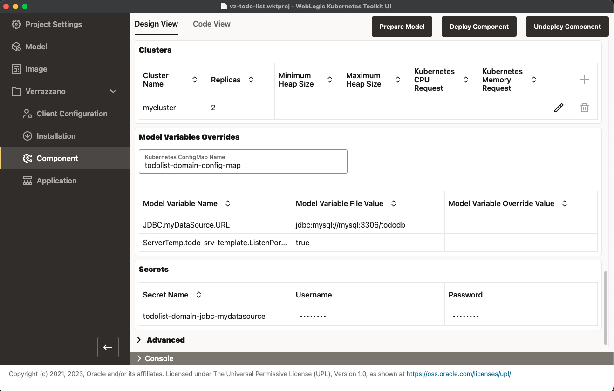

VerrazzanoのインストールにはWebLogic Kubernetes Operatorが含まれています。 新しいWebLogicまたはFMWドメインについてオペレータに通知するには、Kubernetesにオペレータのドメイン・リソース・オブジェクトを含むVerrazzanoコンポーネントを作成する必要があります。 Verrazzano 1.5.0以降、Verrazzanoコンポーネントには、ドメイン内のすべてのクラスタに対してオペレータ・クラスタ・リソース・オブジェクトも必要です。 この分離は、Kubernetes Horizontal Pod Autoscaler (HPA)と連携して、ロードに基づいてクラスタを自動的にスケーリングできるようにする必要があります(ただし、WebLogicクラスタの最大サイズまで)。 詳細は、このWebLogic Kubernetes Operator 「スケーリング」のドキュメントを参照してください。
WKTUIでは、プロジェクト設定のため、ドメインに必要なVerrazzanoコンポーネント・オブジェクトが生成されます。 Verrazzano > Componentページに移動します。 次の表の説明に従って、フォーム・フィールドに入力します。 イメージ・プル・シークレットの値ocrおよびそれが存在しないことは心配しないでください。 ドメインをデプロイする前に、そのシークレットを作成します。
| フィールド名 | 値 |
|---|---|
Verrazzano Version |
まだ移入されていない場合は、フィールド内のボタンを使用して、Kubernetesクラスタからインストール済バージョンを取得します。 |
WebLogic Admin Username |
使用するユーザー名を入力します。 |
WebLogic Admin Password |
使用するパスワードを入力します。 |
WebLogic Kubernetes Operator Installed Version |
このフィールドが入力されていない場合は、テキスト・ボックスのアイコンを押します。 |
Primary Image Tag |
container-registry.oracle.com/middleware/weblogic:14.1.1.0-11-ol8またはcontainer-registry.oracle.com/middleware/weblogic_cpu:14.1.1.0-generic-jdk11-ol8 |
Specify Image Pull Credentials |
ON |
Use Existing Image Pull Secret |
ON |
Image Pull Secret Name |
ocr |
Specify Auxiliary Image Pull Credentials |
ON |
Use Existing Auxiliary Image Pull Secret |
OFF |
Auxiliary Image Pull Secret Name |
ocir |
Auxiliary Image Registry Pull Username |
イメージ・レジストリの<tenancy-name>/<oracle-cloud-username>またはユーザー名。 |
Auxiliary Image Registry Pull Email Address |
電子メール・アドレス |
Auxiliary Image Registry Pull Password |
イメージ・レジストリの<oracle-cloud-auth-token>またはパスワード。 |
前の表のフィールドに入力したら、次の図に示すように、表に含まれる追加のフィールドを確認する必要があります。
Clusters表を確認します。 ご覧のとおり、モデルのクラスタがこの表に追加されています(以前のPrepare Modelアクションの起動により)。 クラスタが表示されない場合は、Prepare Modelを再度実行して表に移入します。 Replicas値が、モデルで指定されているクラスタの最大サイズに設定されていることを確認します。 行の右端に向かって鉛筆アイコンを選択します。 Replicas値を10より大きく設定することはできません。 終了したら、値を2に変更し、OKをクリックします。 Model Variables Overridesセクションを確認します。 このセクションでは、Kubernetes ConfigMapを使用して、補助イメージの変数モデル・ファイルに指定された値をオーバーライドできます。 これらの値をオーバーライドする必要がないため、Secretsセクションに進むことができます。 Secretsセクションには、モデル定義のすべてのシークレットが含まれ、ユーザー名とパスワードを指定できます。 前のイメージで、MySQLデータベース接続に関連付けられたシークレットがすでに移入されていることを確認します。 この値は、Prepare Model処理によってモデル(または変数参照)から削除され、ここで追加されました。 Prepare Modelを複数回実行すると、この値は失われ、手動で入力する必要があります。 WDTでは通常、パスワード値は移入されないため、この項の後半でクイック・スタートscripts/vzDeployMySQLスクリプトを実行するときに指定する予定のMySQLデータベース・パスワードを入力する必要があります。
コンポーネントをデプロイする前に、Code Viewタブに切り替えて、Component Resourceサブタブを選択します。 コンポーネントにワークロード・オブジェクトVerrazzanoWebLogicWorkloadが含まれていることに注意してください。 このオブジェクトには、ドメインのWebLogic Kubernetes Operatorドメインおよびクラスタ・カスタム・リソースが含まれます。 ConfigMap Resourceサブタブもあります。 これは、Model Variable Override値が格納されるKubernetes ConfigMapです。 モデル変数の値はいずれもオーバーライドしなかったため、todolist-domain-overrides.properties要素は空です。
「コンポーネントのデプロイ」をクリックします。 Verrazzanoコンポーネントをデプロイすると、Kubernetesにコンポーネント・オブジェクトが作成されるだけで、WebLogicドメインがインスタンス化されることはありません。 これは、Verrazzanoアプリケーション(アプリケーション構成とも呼ばれる)オブジェクトがデプロイされた後に発生します。
Verrazzanoアプリケーション・オブジェクトの作成に注意を払う前に、MySQLデータベースのVerrazzanoコンポーネントを作成する必要があります。 データベースをドメインと同じネームスペースにデプロイするため、次のKubernetesオブジェクトを作成してデータベースをデプロイする必要があります:
todolist-domain-nsネームスペース - WebLogicまたはFMWドメインとMySQLデータベースの両方が存在するKubernetesネームスペース。ocrシークレット - Oracle Container RegistryからイメージをプルするためのKubernetesイメージ・プル・シークレット。mysqlシークレット - ToDoリスト・アプリケーションがデータベースへの接続に使用するユーザーのrootパスワード、ユーザー名およびパスワードを保持するKubernetesシークレット。todolist-mysql-cm ConfigMap - init-schema.sqlスクリプトを保持して起動時にMySQLデータベースを初期化するために使用するKubernetes ConfigMap。todolist-mysql-deploymentデプロイメント - MySQLデータベースを起動および管理するKubernetesデプロイメント。mysqlサービス - MySQLデータベースをmysql DNS名でWebLogic管理対象サーバーに公開するKubernetesサービス。これを簡単にするには、QuickStartディレクトリに移動し、次の手順を実行します:
setQuickstartEnvシェル・スクリプトの境界セクションを環境と一致するように編集します。setQuickstartEnvシェル・スクリプトを実行します。scriptsサブディレクトリに変更し、vzDeployMySQLスクリプトを実行します。このスクリプトは、前述したKubernetesオブジェクトおよびVerrazzanoコンポーネントを作成します。MySQLデータベース・コンポーネントがデプロイされたため、次の項で説明するVerrazzanoアプリケーションを作成する準備ができました。